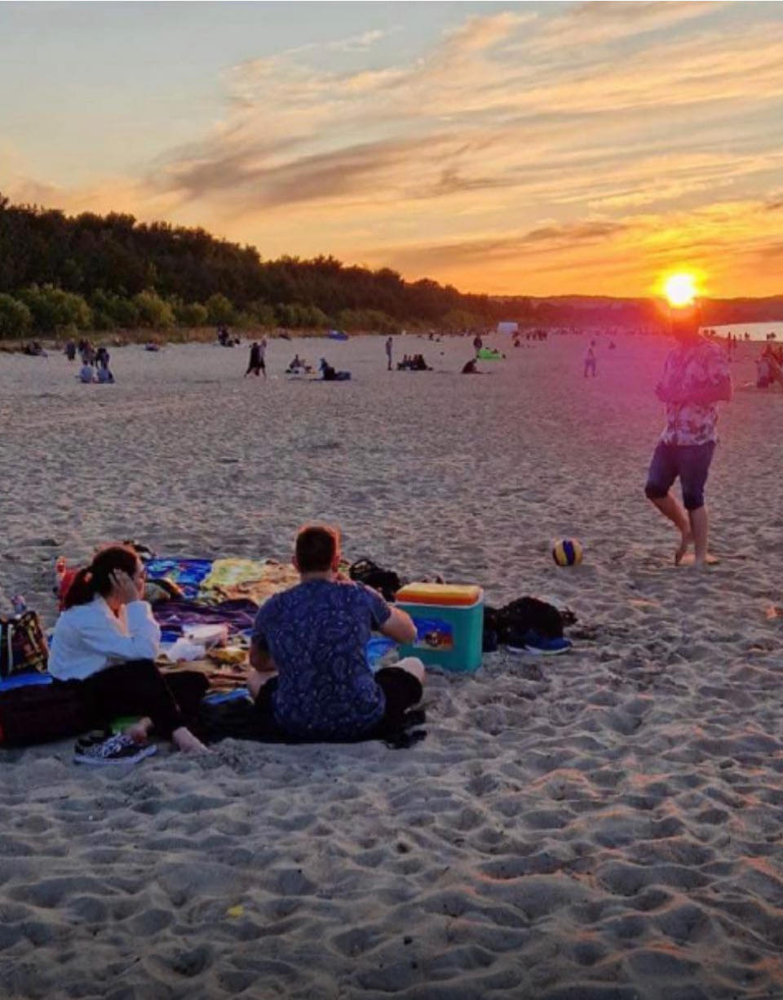

Było to lato 2023 roku, kiedy po raz pierwszy spotkaliśmy się na plaży w Brzeźnie. Zachód słońca malował niebo odcieniami pomarańczy i różu, gdy spotkaliśmy się ze swoimi znajomymi. Pogoda była idealna, a atmosfera pełna radości i rozmów. Szybko znaleźliśmy wspólny język i po spotkaniu zaczęliśmy rozmawiać przez Messengera. Codzienne rozmowy trwały do późnych godzin nocnych, a tematów było tak wiele, że czas mijał niezauważenie. Miesiąc później Michał zaprosił Kamilę na spotkanie w Gdańsku, do Parku Oliwskiego. Tam spędziliśmy razem cały dzień, spacerując i rozmawiając, pokonując ponad 20 000 kroków. Dzień spędzony w Oliwie był magiczny i pełen niezapomnianych chwil. Kolejne spotkanie miało miejsce w Gdyni, gdzie Michał zapytał Kamilę, czy chciałaby być jego dziewczyną. Zgodziła się, a od tego momentu nasz związek zaczął się rozwijać jeszcze bardziej intensywnie. Przez kolejny rok poznawaliśmy się coraz lepiej, ucząc się nawzajem i wzmacniając swoją więź. Mieliśmy wiele romantycznych randek, długich rozmów i nocnych spacerów. Nasza miłość rosła z każdym dniem, a Michał w końcu postanowił, że czas poprosić Kamilę o coś więcej. Dnia 8 lipca 2024 roku, dokładnie w tym samym miejscu, gdzie się poznaliśmy, Michał zrobił Kamilce niespodziankę. Przy pięknym zachodzie słońca oświadczył się, prezentując pierścionek na plaży. Teraz z wielką radością zapraszamy wszystkich naszych bliskich na ślub i wesele, które odbędą się 18 lipca 2025 roku. Chcemy celebrować ten szczególny dla nas dzień z ludźmi, którzy są dla nas najważniejsi.
